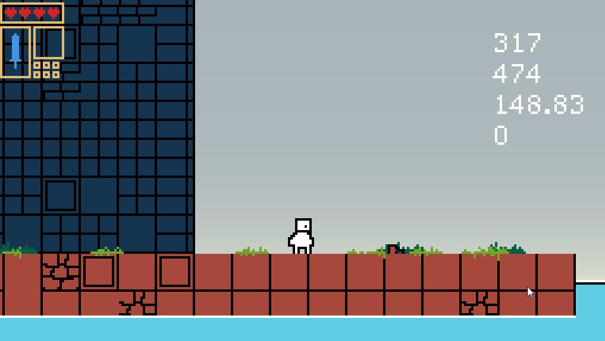
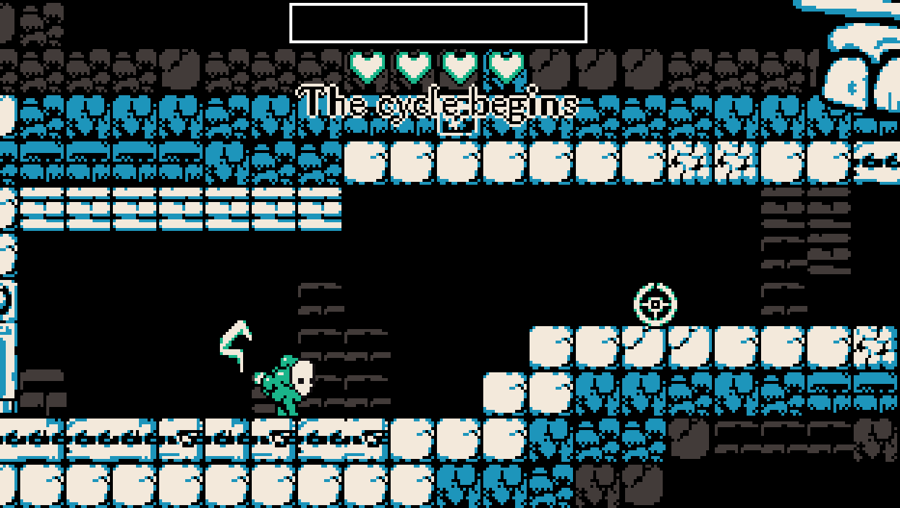
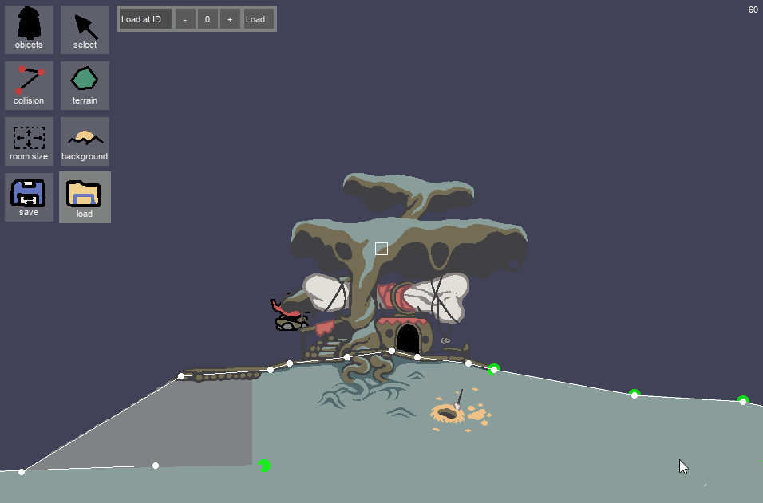
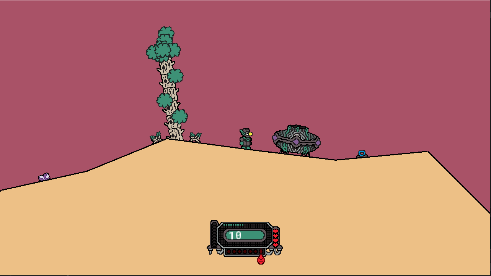

Infinitower
Made using: C++ & SFML-2 Responsible for: Game design, programming & art
An ongoing project where I aim to develop mostly anything from scratch, using C++ and only the SFML-2 framework for rendering and keyboard input capabilities.
My goal with this project is to develop a videogame while applying common methods from robotics (e.g. state-space physics, AI) to see whether this aids or hampers development.

A game made in 72 hours where you endlessly go through a procedurally generated world, taking over enemies before your time runs out.
Here, we worked with a team of 5.

A series of prototypes developed with artist and game designer
Chariospirale. Here, my focus was to employ
vector-based collision rather than a finite-grid to achieve a more seamless and natural-looking world.
The goal is to explore a mysterious world as a dog warrior to find your missing bone.

A game made in 72 hours where you explore procedurally generated planets to collect fuel and find your way home before the monsters get you.
Here, I worked together with artist and game designer
Chariospirale, and we focused on designing a unique game-loop
which consists of resource gathering and low-input real-time strategy through group building.
Click here to head to the download page!

A game made in 72 hours where you explore a world as a group of followers carrying around a mysterious casket. My goal here was to play around with the idea of the playable character,
controlling a small swarm rather than an individual actor.
A game made in 72 hours where you survive your way through a hostile world and assimilate body parts to grow stronger.
My goal was to expriment with how movement and character design/progression could be modularized.
Given more time, I would have loved to implement some sort of modular IK solver system.
Here, we worked with a team of 5, collaboratively developing and designing the game from scratch.